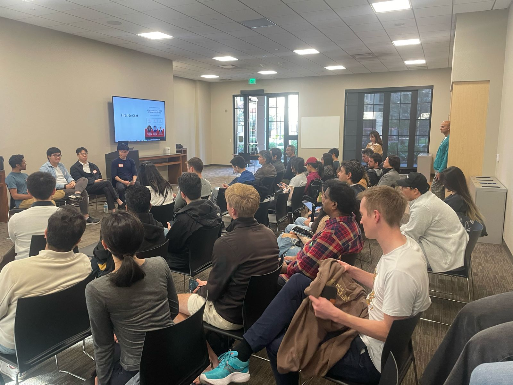

Cultivating Innovation.
Stanford Founders is a dynamic ecosystem connecting cross-disciplinary Stanford graduate students to foster co-founder relationships and support early-stage startup development.

An image from one of our many fireside chats!
Our History
Stanford Founders began as a casual WhatsApp group with 10 friends to share entrepreneurial events, resources, and opportunities among friends from different graduate schools at Stanford University.
We noticed the difficulty Stanford graduate students faced in finding cofounders and accessing entrepreneurial resources from other schools, and this group aimed to bridge that gap.
The group chat quickly grew from 10 to over 1,200 members, highlighting the need for such a network. We transformed this group into an official student organization, offering programs and events to cross-disciplinary Stanford graduate students to aid in their early-stage startup development.
Mission & Values
We value diversity, collaboration, and integrity in all our endeavors, fostering a supportive and dynamic ecosystem that propels entrepreneurial success.
Our community of over 1,200 graduate student founders thrives on collaborations. Stanford Founders connects them with resources, investors, and like-minded co-founders for transformative growth.
Transform Your Ideas into Impact.
Join Our Community